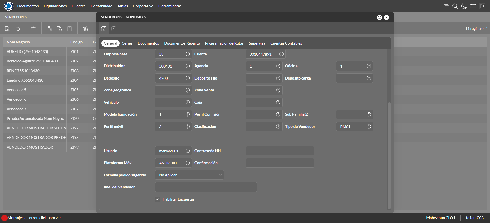

Desarrollado por : Area de Testing PWST
Fecha y hora de inicio : 2022-12-27 09:42:26
Duracion : 0:01:44.702706
Resultado : Total 8，Correctos 4 ，Errores 4 ，Taza de resultado 50.00%
Resumen 50.00% Errores 4 Fallidos 0 Correctos 4 Test realizados 8
| Caso de Prueba | Total | Correctos | Fallido | Error | Detalles | Captura del error |
| Vendedores.Test: Escenario 1 de Vendedores | 8 | 4 | 0 | 4 | Detalles | |
test |
ft1_1: 2022-12-27 09:42:27,440 - root - INFO - Se abre el chrome
2022-12-27 09:42:28,382 - root - INFO - Entra a la URL
2022-12-27 09:42:28,500 - root - INFO - Maximiza la pantalla
Traceback (most recent call last):
File "C:\Users\jsand\AppData\Local\Programs\Python\Python310\lib\site-packages\selenium-4.4.0-py3.10.egg\selenium\webdriver\remote\switch_to.py", line 87, in frame
frame_reference = self._driver.find_element(By.ID, frame_reference)
File "C:\Users\jsand\AppData\Local\Programs\Python\Python310\lib\site-packages\selenium-4.4.0-py3.10.egg\selenium\webdriver\remote\webdriver.py", line 856, in find_element
return self.execute(Command.FIND_ELEMENT, {
File "C:\Users\jsand\AppData\Local\Programs\Python\Python310\lib\site-packages\selenium-4.4.0-py3.10.egg\selenium\webdriver\remote\webdriver.py", line 434, in execute
self.error_handler.check_response(response)
File "C:\Users\jsand\AppData\Local\Programs\Python\Python310\lib\site-packages\selenium-4.4.0-py3.10.egg\selenium\webdriver\remote\errorhandler.py", line 243, in check_response
raise exception_class(message, screen, stacktrace)
selenium.common.exceptions.NoSuchElementException: Message: no such element: Unable to locate element: {"method":"css selector","selector":"[id="mainFrame"]"}
(Session info: chrome=108.0.5359.125)
Stacktrace:
Backtrace:
(No symbol) [0x00A2F243]
(No symbol) [0x009B7FD1]
(No symbol) [0x008AD04D]
(No symbol) [0x008DC0B0]
(No symbol) [0x008DC22B]
(No symbol) [0x0090E612]
(No symbol) [0x008F85D4]
(No symbol) [0x0090C9EB]
(No symbol) [0x008F8386]
(No symbol) [0x008D163C]
(No symbol) [0x008D269D]
GetHandleVerifier [0x00CC9A22+2655074]
GetHandleVerifier [0x00CBCA24+2601828]
GetHandleVerifier [0x00AD8C0A+619850]
GetHandleVerifier [0x00AD7830+614768]
(No symbol) [0x009C05FC]
(No symbol) [0x009C5968]
(No symbol) [0x009C5A55]
(No symbol) [0x009D051B]
BaseThreadInitThunk [0x76796BD9+25]
RtlGetFullPathName_UEx [0x77B58FD2+1218]
RtlGetFullPathName_UEx [0x77B58F9D+1165]
During handling of the above exception, another exception occurred:
Traceback (most recent call last):
File "C:\Users\jsand\AppData\Local\Programs\Python\Python310\lib\site-packages\selenium-4.4.0-py3.10.egg\selenium\webdriver\remote\switch_to.py", line 90, in frame
frame_reference = self._driver.find_element(By.NAME, frame_reference)
File "C:\Users\jsand\AppData\Local\Programs\Python\Python310\lib\site-packages\selenium-4.4.0-py3.10.egg\selenium\webdriver\remote\webdriver.py", line 856, in find_element
return self.execute(Command.FIND_ELEMENT, {
File "C:\Users\jsand\AppData\Local\Programs\Python\Python310\lib\site-packages\selenium-4.4.0-py3.10.egg\selenium\webdriver\remote\webdriver.py", line 434, in execute
self.error_handler.check_response(response)
File "C:\Users\jsand\AppData\Local\Programs\Python\Python310\lib\site-packages\selenium-4.4.0-py3.10.egg\selenium\webdriver\remote\errorhandler.py", line 243, in check_response
raise exception_class(message, screen, stacktrace)
selenium.common.exceptions.NoSuchElementException: Message: no such element: Unable to locate element: {"method":"css selector","selector":"[name="mainFrame"]"}
(Session info: chrome=108.0.5359.125)
Stacktrace:
Backtrace:
(No symbol) [0x00A2F243]
(No symbol) [0x009B7FD1]
(No symbol) [0x008AD04D]
(No symbol) [0x008DC0B0]
(No symbol) [0x008DC22B]
(No symbol) [0x0090E612]
(No symbol) [0x008F85D4]
(No symbol) [0x0090C9EB]
(No symbol) [0x008F8386]
(No symbol) [0x008D163C]
(No symbol) [0x008D269D]
GetHandleVerifier [0x00CC9A22+2655074]
GetHandleVerifier [0x00CBCA24+2601828]
GetHandleVerifier [0x00AD8C0A+619850]
GetHandleVerifier [0x00AD7830+614768]
(No symbol) [0x009C05FC]
(No symbol) [0x009C5968]
(No symbol) [0x009C5A55]
(No symbol) [0x009D051B]
BaseThreadInitThunk [0x76796BD9+25]
RtlGetFullPathName_UEx [0x77B58FD2+1218]
RtlGetFullPathName_UEx [0x77B58F9D+1165]
During handling of the above exception, another exception occurred:
Traceback (most recent call last):
File "C:\xampp\htdocs\versiones\automatizaciones\AutoPWST\01VE\testCase\Vendedores.py", line 36, in test
self.driver.switch_to.frame("mainFrame")
File "C:\Users\jsand\AppData\Local\Programs\Python\Python310\lib\site-packages\selenium-4.4.0-py3.10.egg\selenium\webdriver\remote\switch_to.py", line 92, in frame
raise NoSuchFrameException(frame_reference)
selenium.common.exceptions.NoSuchFrameException: Message: mainFrame
|
|
||||
test_000: Ingresa a la base de datos |
pt1_2: 2022-12-27 09:42:31,586 - root - INFO - Escribe el usuario
2022-12-27 09:42:31,656 - root - INFO - Escribe la contraseña
2022-12-27 09:42:31,715 - root - INFO - Se dio clic en el boton ingresar
2022-12-27 09:42:32,393 - root - INFO - Ejecutar Enterprise
2022-12-27 09:42:36,457 - root - INFO - Cambia entre pestañas
|
|
||||
test_001: Abre menu y ejecuta pantalla |
pt1_3: 2022-12-27 09:42:47,900 - root - INFO - Abre la pantalla de Familias de Impuestos
2022-12-27 09:42:48,478 - root - INFO - La pantalla ejecutada es Familias de Impuestos
2022-12-27 09:42:48,479 - root - INFO - Captura: C:\xampp\htdocs\versiones\automatizaciones\AutoPWST\01VE\report\img screen：20221227_09_42_48.png
2022-12-27 09:42:49,214 - root - INFO - Se da clic en el registro creado, para proceder a modificarlo.
2022-12-27 09:42:49,869 - root - INFO - Se hace el cambio de pestaña para continuar con el registro nuevo
2022-12-27 09:42:55,720 - root - INFO - Se da clic en el registro creado, para proceder a modificarlo.
2022-12-27 09:42:55,783 - root - INFO - Se presiona el boton 'Eliminar', para eliminar el registro.
2022-12-27 09:42:55,899 - root - INFO - Se hace el cambio de pestaña para continuar con el registro nuevo
2022-12-27 09:43:01,740 - root - INFO - Se da clic en el registro creado, para proceder a modificarlo.
2022-12-27 09:43:01,809 - root - INFO - Se presiona el boton 'Eliminar', para eliminar el registro.
2022-12-27 09:43:01,930 - root - INFO - Se hace el cambio de pestaña para continuar con el registro nuevo
2022-12-27 09:43:03,040 - root - INFO - Se da clic en el registro creado, para proceder a modificarlo.
2022-12-27 09:43:03,089 - root - INFO - Se presiona el boton 'Eliminar', para eliminar el registro.
2022-12-27 09:43:03,239 - root - INFO - Se da clic en el boton Guardar; se debe modificar la informacion del registro.
2022-12-27 09:43:03,810 - root - INFO - Se da clic en el registro creado, para proceder a eliminarlo.
2022-12-27 09:43:03,872 - root - INFO - Se presiona el boton 'Eliminar', para eliminar el registro.
2022-12-27 09:43:04,479 - root - INFO - Se confirma el eliminado del registro
2022-12-27 09:43:04,653 - root - INFO - Se presiona el boton 'Refrescar', para crear un nuevo registro igual al anterior.
2022-12-27 09:43:04,772 - root - INFO - Se presiona el boton 'Nuevo', para crear un nuevo registro.
|

|
||||
test_002: Abre la ventana de nuevo y crear un registro |
pt1_4: 2022-12-27 09:43:05,332 - root - INFO - Se abrio la pantalla para el ingreso de un registro nuevo.
2022-12-27 09:43:05,361 - root - INFO - El campo 'Codigo' si se encuentra visible.
2022-12-27 09:43:05,418 - root - INFO - El campo 'Código Alternativo' si se encuentra visible.
2022-12-27 09:43:05,448 - root - INFO - El campo 'Código Usuario' si se encuentra visible.
2022-12-27 09:43:05,477 - root - INFO - El campo 'Nom Negocio' si se encuentra visible.
2022-12-27 09:43:05,505 - root - INFO - El campo 'Documento de Identidad' si se encuentra visible.
2022-12-27 09:43:05,534 - root - INFO - El campo 'Calle' si se encuentra visible.
2022-12-27 09:43:05,561 - root - INFO - El campo 'Nro. Puerta' si se encuentra visible.
2022-12-27 09:43:05,590 - root - INFO - El campo 'Esquinas' si se encuentra visible.
2022-12-27 09:43:05,617 - root - INFO - El campo 'Teléfonos' si se encuentra visible.
2022-12-27 09:43:05,644 - root - INFO - El campo 'Empresa base' si se encuentra visible.
2022-12-27 09:43:05,673 - root - INFO - El campo 'Cuenta base' si se encuentra visible.
2022-12-27 09:43:05,701 - root - INFO - El campo 'Distribuidor base' si se encuentra visible.
2022-12-27 09:43:05,734 - root - INFO - El campo 'Agencia' si se encuentra visible.
2022-12-27 09:43:05,761 - root - INFO - El campo 'Oficina' si se encuentra visible.
2022-12-27 09:43:05,788 - root - INFO - El campo 'Depósito' si se encuentra visible.
2022-12-27 09:43:05,815 - root - INFO - El campo 'Modelo liquidación' si se encuentra visible.
2022-12-27 09:43:05,842 - root - INFO - El campo 'Perfil móvil' si se encuentra visible.
2022-12-27 09:43:05,869 - root - INFO - El campo 'Tipo de Vendedor' si se encuentra visible.
2022-12-27 09:43:05,896 - root - INFO - El campo 'Plataforma Móvil' si se encuentra visible.
2022-12-27 09:43:05,924 - root - INFO - El campo 'Fórmula pedido sugerido' si se encuentra visible.
2022-12-27 09:43:05,951 - root - INFO - El campo 'Habilitar Encuestas' si se encuentra visible.
2022-12-27 09:43:06,001 - root - INFO - Ingresa el codigo del nuevo registro
2022-12-27 09:43:06,074 - root - INFO - Ingresa el codigo alternativo del nuevo registro
2022-12-27 09:43:06,151 - root - INFO - Ingresa el codigo usuario del nuevo registro
2022-12-27 09:43:06,255 - root - INFO - Ingresa el Nom Negocio del nuevo registro
2022-12-27 09:43:06,342 - root - INFO - Ingresa el Documento de Identidad del nuevo registro
2022-12-27 09:43:06,441 - root - INFO - Ingresa la calle del nuevo registro
2022-12-27 09:43:06,503 - root - INFO - Ingresa el nro puerta del nuevo registro
2022-12-27 09:43:06,585 - root - INFO - Ingresa la Esquina 1 del nuevo registro
2022-12-27 09:43:06,663 - root - INFO - Ingresa la Esquina 2 del nuevo registro
2022-12-27 09:43:06,736 - root - INFO - Ingresa el Telefono 1 del nuevo registro
2022-12-27 09:43:06,810 - root - INFO - Ingresa el Telefono 2 del nuevo registro
2022-12-27 09:43:21,901 - root - INFO - Captura: C:\xampp\htdocs\versiones\automatizaciones\AutoPWST\01VE\report\img screen：20221227_09_43_21.png
2022-12-27 09:43:22,203 - root - INFO - Se hace el cambio de pestaña para continuar con el registro nuevo
2022-12-27 09:43:22,886 - root - INFO - Se presiona el boton 'Nuevo', para crear un nuevo registro.
2022-12-27 09:43:23,593 - root - INFO - El campo 'Serie base' si se encuentra visible.
2022-12-27 09:43:23,669 - root - INFO - El campo 'Tipo Impresora' si se encuentra visible.
2022-12-27 09:43:23,726 - root - INFO - El campo 'Puerto Impresora' si se encuentra visible.
2022-12-27 09:43:23,784 - root - INFO - El campo 'Impresora + Lenguaje' si se encuentra visible.
2022-12-27 09:43:23,843 - root - INFO - El campo 'Clave correlativo' si se encuentra visible.
2022-12-27 09:43:23,906 - root - INFO - El campo 'Desde número' si se encuentra visible.
2022-12-27 09:43:23,965 - root - INFO - El campo 'Hasta número' si se encuentra visible.
2022-12-27 09:43:25,960 - root - INFO - Ingresa la Clave Correlativo del nuevo registro
2022-12-27 09:43:26,083 - root - INFO - Ingresa Desde Numero del nuevo registro
2022-12-27 09:43:26,221 - root - INFO - Ingresa Hasta Numero del nuevo registro
2022-12-27 09:43:26,326 - root - INFO - Se presiona el boton 'Guardar', para guardar el registro.
2022-12-27 09:43:26,528 - root - INFO - Se hace el cambio de pestaña para continuar con el registro nuevo
2022-12-27 09:43:27,170 - root - INFO - Se presiona el boton 'Nuevo', para crear un nuevo registro.
2022-12-27 09:43:27,755 - root - INFO - El campo 'Tipo documento' si se encuentra visible.
2022-12-27 09:43:27,808 - root - INFO - El campo 'Modelo de Impresión' si se encuentra visible.
2022-12-27 09:43:30,469 - root - INFO - Se presiona el boton 'Guardar', para guardar el registro.
2022-12-27 09:43:30,669 - root - INFO - Se hace el cambio de pestaña para continuar con el registro nuevo
2022-12-27 09:43:31,304 - root - INFO - Se presiona el boton 'Nuevo', para crear un nuevo registro.
2022-12-27 09:43:31,870 - root - INFO - El campo 'Tipo Documento 2' si se encuentra visible.
2022-12-27 09:43:31,918 - root - INFO - El campo 'Modelo de Impresión' si se encuentra visible.
2022-12-27 09:43:34,206 - root - INFO - Se presiona el boton 'Guardar', para guardar el registro.
2022-12-27 09:43:34,412 - root - INFO - Se da clic en el boton Guardar; se debe crear un nuevo registro.
|

|
||||
test_003: Repetir el registro creado anteriormente |
ft1_5: 2022-12-27 09:43:34,715 - root - INFO - Se presiona el boton 'Refrescar', para crear un nuevo registro igual al anterior.
2022-12-27 09:43:34,867 - root - INFO - Se presiona el boton 'Nuevo', para crear un nuevo registro igual al anterior.
2022-12-27 09:43:35,463 - root - INFO - Se abrio la pantalla para el ingreso de un registro nuevo.
2022-12-27 09:43:35,520 - root - INFO - El campo 'Codigo' si se encuentra visible.
2022-12-27 09:43:35,645 - root - INFO - El campo 'Código Alternativo' si se encuentra visible.
2022-12-27 09:43:35,700 - root - INFO - El campo 'Código Usuario' si se encuentra visible.
2022-12-27 09:43:35,753 - root - INFO - El campo 'Nom Negocio' si se encuentra visible.
2022-12-27 09:43:35,807 - root - INFO - El campo 'Documento de Identidad' si se encuentra visible.
2022-12-27 09:43:35,861 - root - INFO - El campo 'Calle' si se encuentra visible.
2022-12-27 09:43:35,920 - root - INFO - El campo 'Nro. Puerta' si se encuentra visible.
2022-12-27 09:43:35,975 - root - INFO - El campo 'Esquinas' si se encuentra visible.
2022-12-27 09:43:36,042 - root - INFO - El campo 'Teléfonos' si se encuentra visible.
2022-12-27 09:43:36,100 - root - INFO - El campo 'Empresa base' si se encuentra visible.
2022-12-27 09:43:36,163 - root - INFO - El campo 'Cuenta base' si se encuentra visible.
2022-12-27 09:43:36,219 - root - INFO - El campo 'Distribuidor base' si se encuentra visible.
2022-12-27 09:43:36,285 - root - INFO - El campo 'Agencia' si se encuentra visible.
2022-12-27 09:43:36,341 - root - INFO - El campo 'Oficina' si se encuentra visible.
2022-12-27 09:43:36,400 - root - INFO - El campo 'Depósito' si se encuentra visible.
2022-12-27 09:43:36,459 - root - INFO - El campo 'Modelo liquidación' si se encuentra visible.
2022-12-27 09:43:36,519 - root - INFO - El campo 'Perfil móvil' si se encuentra visible.
2022-12-27 09:43:36,573 - root - INFO - El campo 'Tipo de Vendedor' si se encuentra visible.
2022-12-27 09:43:36,621 - root - INFO - El campo 'Plataforma Móvil' si se encuentra visible.
2022-12-27 09:43:36,688 - root - INFO - El campo 'Fórmula pedido sugerido' si se encuentra visible.
2022-12-27 09:43:36,764 - root - INFO - El campo 'Habilitar Encuestas' si se encuentra visible.
2022-12-27 09:43:36,858 - root - INFO - Ingresa el codigo del nuevo registro
2022-12-27 09:43:36,993 - root - INFO - Ingresa el codigo alternativo del nuevo registro
2022-12-27 09:43:37,131 - root - INFO - Ingresa el codigo usuario del nuevo registro
2022-12-27 09:43:37,306 - root - INFO - Ingresa el Nom Negocio del nuevo registro
2022-12-27 09:43:37,522 - root - INFO - Ingresa el Documento de Identidad del nuevo registro
2022-12-27 09:43:37,768 - root - INFO - Ingresa la calle del nuevo registro
2022-12-27 09:43:37,933 - root - INFO - Ingresa el nro puerta del nuevo registro
2022-12-27 09:43:38,116 - root - INFO - Ingresa la Esquina 1 del nuevo registro
2022-12-27 09:43:38,285 - root - INFO - Ingresa la Esquina 2 del nuevo registro
2022-12-27 09:43:38,425 - root - INFO - Ingresa el Telefono 1 del nuevo registro
2022-12-27 09:43:38,564 - root - INFO - Ingresa el Telefono 2 del nuevo registro
2022-12-27 09:43:52,571 - root - INFO - Se da clic en el boton Guardar; se debe crear un nuevo registro.
2022-12-27 09:43:53,572 - root - INFO - Captura: C:\xampp\htdocs\versiones\automatizaciones\AutoPWST\01VE\report\img screen：20221227_09_43_53.png
2022-12-27 09:43:54,791 - root - INFO - Captura: C:\xampp\htdocs\versiones\automatizaciones\AutoPWST\01VE\report\img screen：20221227_09_43_54.png
2022-12-27 09:44:05,340 - root - ERROR - v Cerrar, validar que la acción anterior haya finalizado,que el xpath sea el correcto o que la página no presente lentitud
2022-12-27 09:44:05,341 - root - INFO - Captura: C:\xampp\htdocs\versiones\automatizaciones\AutoPWST\01VE\report\img screen：20221227_09_44_05.png
2022-12-27 09:44:11,025 - root - INFO - Se cierra chrome
Traceback (most recent call last):
File "C:\xampp\htdocs\versiones\automatizaciones\AutoPWST\01VE\testCase\Vendedores.py", line 90, in test_003
raise Exception()
Exception
|
 | ||||
test_004: Modificar el registro |
ft1_6: 2022-12-27 09:44:11,029 - root - ERROR - La pantalla anterior fallo por lo que esta no funcionara, para mas detalles del error consulte el reporte
Traceback (most recent call last):
File "C:\xampp\htdocs\versiones\automatizaciones\AutoPWST\01VE\testCase\Vendedores.py", line 117, in test_004
raise Exception()
Exception
|
|
||||
test_005: Eliminar el registro creado |
ft1_7: 2022-12-27 09:44:11,031 - root - ERROR - La pantalla anterior fallo por lo que esta no funcionara, para mas detalles del error consulte el reporte
Traceback (most recent call last):
File "C:\xampp\htdocs\versiones\automatizaciones\AutoPWST\01VE\testCase\Vendedores.py", line 134, in test_005
raise Exception()
Exception
|
|
||||
test_006: Cerrar_Navegador |
Correcto |
|
||||
| Caso de prueba | 8 | 4 | 0 | 4 | Taza de resultado：50.00% | |